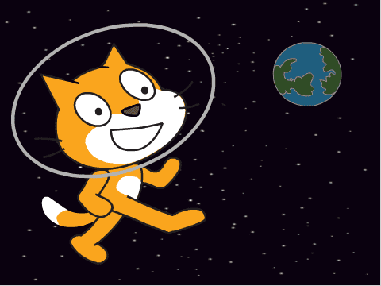
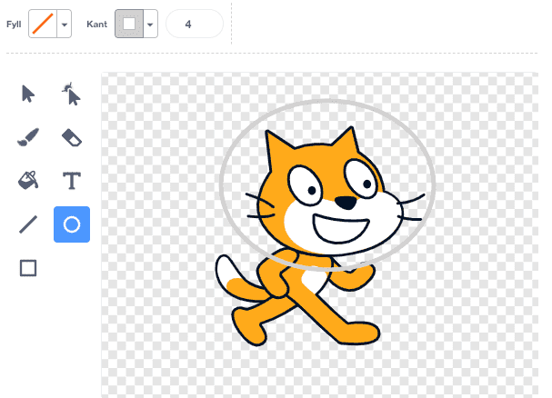

Katten vår har så lyst å være en astronaut, la oss se om vi kan hjelpe
ham? Underveis vil vi lære hvordan vi flytter figurer rundt på
skjermen, og hvordan katter blir påvirket av gravitasjonskreftene fra
jorden.

Steg 1: En flyvende katt
Vi begynner prosjektet vårt med å få katten til å fly!
Sjekkliste
Start et nytt prosjekt. Du vil se en katt som venter på å bli
programmert!
Prøv å klikk på de blå klossene midt på skjermen. For eksempel, om
du klikker på
gå (10) steg
skal du se at katten flytter litt på seg, og om du klikker på
vend høyre (15) grader
vil den snu seg! Disse klossene er kommandoer vi kan gi til
katten!
Legg merke til at at over de blå klossene er det flere kategorier av
kommandoer i forskjellige farger, for eksempel
Utseende og Lyd. Klikk på disse
kategoriene og prøv noen av klossene du finner!
For å sette sammen flere kommandoer til et skript kan du dra klosser
til det store tomme området til høyre på skjermen.
Prøv å pusle sammen disse klossene (bruk fargene for å finne
riktig kategori):
når grønt flagg klikkes
for alltid
gå (10) steg
vend høyre (15) grader
slutt
Test prosjektet
Legg merke til at den første klossen sier at noe skal skje når vi
klikker et grønt flagg. Over vinduet med katten til venstre er det et
grønt flagg. Klikk på det!
Du skal se at katten flytter seg rundt i en sirkel. Les koden du
laget en gang til. Skjønner du hvorfor katten går i sirkel?
Prøv å endre tallene i koden din. Kan du få katten til å gå saktere?
I større sirkler?
Sjekkliste
Nå skal vi endre litt på koden slik at vi kan kontrollere hvordan
katten beveger seg. I kategorien Sansning finnes en
kloss som reagerer når en tast er trykket. Den kan vi bruke til å
styre katten med piltastene.
Bytt ut klossene i koden din slik at den blir seende slik ut:
når grønt flagg klikkes
for alltid
hvis (tast [pil høyre v] trykket?)
vend høyre (5) grader
slutt
hvis (tast [pil venstre v] trykket?)
vend venstre (5) grader
slutt
hvis (tast [pil opp v] trykket?)
gå (5) steg
slutt
slutt
Test prosjektet
Klikk på det grønne flagget.
Kan du styre katten rundt ved å bruke piltastene?
Forstår du hvordan katten kontrolleres?
Kan du få katten til å fly raskere eller saktere ved å endre i koden?
Steg 2: Ut i verdensrommet!
Nå skal vi sende den flyvende katten ut i verdensrommet.
Sjekkliste
Klikk på nederst
til venstre på skjermen for å hente inn en ny bakgrunn. Velg
bakgrunnen stars som du finner i kategorien Romfart.
Vi skal også gi katten en liten oksygentank, siden den flyr rundt
ute i rommet. Klikk på katten i figurvinduet og deretter på fanen
Drakter øverst på skjermen.
Velg først en litt lys farge. Klikk deretter på Ellipse-verktøyet
til høyre på skjermen, og tegn en ellipse rundt hodet på katten.

Til slutt lager vi også en jordklode, som katten kan fly rundt.
Klikk på fanen Skript og deretter på
. Velg
jordklodefiguren Romfart/Earth. Plasser denne litt på siden av skjermen.
Test prosjektet
Klikk på det grønne flagget.
Flyr katten rundt omkring i verdensrommet?
Steg 3: Litt mer ekte ...
Vi skal nå legge på noen effekter som gjør at spillet virker litt mer
realistisk.
Sjekkliste
Først kan vi få jordkloden til å rotere. Dette er enkelt, vi har jo
allerede gjort det for katten! Pass på at jordkloden er merket i
figurlisten, og lag deretter dette skriptet:
når grønt flagg klikkes
for alltid
vend høyre (1) grader
slutt
Videre skal vi gjøre det slik at det ser ut som om katten flyr mot
jorda. Det gjør vi ved å endre størrelsen slik at katten blir mindre
jo nærmere den kommer jordkloden.
Klikk på katten i figurlisten. Legg sett størrelse til nederst i for alltid-løkka,
slik at størrelsen på katten er avhengig av avstanden til
jordkloden:
når grønt flagg klikkes
for alltid
hvis (tast [pil høyre v] trykket?)
vend høyre (5) grader
slutt
hvis (tast [pil venstre v] trykket?)
vend venstre (5) grader
slutt
hvis (tast [pil opp v] trykket?)
gå (5) steg
slutt
sett størrelse til (avstand til [Earth v])%
slutt
Test prosjektet
Klikk på det grønne flagget.
Blir katten mindre når den nærmer seg jorda?
Ser det ut som om den flyr ned mot jorda, og kommer tilbake til oss?
Sjekkliste
For å gjøre det enda mer realistisk vil vi forandre hvor langt
katten flytter seg med. Når den er langt unna oss flytter den seg
ikke like mange steg. Bytt ut
gå (5) steg
med
gå ((avstand til [Earth v]) / (50)) steg
Denne klossen er litt komplisert fordi den er satt sammen av tre
forskjellige klosser. Se på fargene så finner du de riktige
klossene.
Av og til vil katten fly bak jordkloden. For å slippe det kan du
legge klossen legg øverst først i katten sitt
skript.
Test prosjektet
Klikk på det grønne flagget.
Flyr katten rundt omkring i verdensrommet? Kan du få den til å lande
på jorda?
Prøv også å flytte jordkloden til andre steder på skjermen. Blir det
annerledes å fly med katten nå?
Steg 4: Gravitasjon
Gravitasjon er kraften som jorda trekker på alle katter og mennesker
med. Vi kan la astrokatten vår bli påvirket av gravitasjonen også.
Sjekkliste
Lag et nytt skript på katten. Du kan bare legge klossene ved siden
av det skriptet du allerede har laget. Skriptet skal se slik ut:
når grønt flagg klikkes
gå til x: (-200) y: (150)
for alltid
pek mot [Earth v]
gå (1) steg
slutt
Når du tester programmet ditt ved å klikke på det grønne flagget,
vil du se at katten svever mot jordkloden. Gravitasjonen trekker på
den!
MEN, vi har et problem: Vi kan ikke lengre styre katten! Hva har skjedd?
I det nye skriptet sier vi at katten for alltid
skal peke mot jordkloden. Da hjelper det jo ikke
at vi i det andre skriptet sier at katten skal snu seg.
Det er ingen kommando i Scratch for å flytte en figur mot en
annen. Derfor må vi peke katten mot jordkloden og deretter flytte
den. Men vi kan få programmet til å virke igjen, hvis vi bare husker
hvilken retning katten pekte før vi snudde den.
For at programmer skal huske ting bruker vi variabler. Lag en
variabel ved å klikke på Data-kategorien og deretter
på Lag en variabel. Kall variabelen katteretning.
Vi kan nå bruke denne variabelen til å huske hvilken retning katten
pekte. Endre skriptet ditt ved å legge til to nye klosser:
når grønt flagg klikkes
gå til x: (-200) y: (150)
for alltid
sett [katteretning v] til (retning)
pek mot [Earth v]
gå (1) steg
pek i retning (katteretning)
slutt
Test prosjektet
Klikk på det grønne flagget.
Kan du styre katten igjen?
Hvis du ikke trykker på noen taster, vil katten da falle ned mot jorden?
Legg merke til at hvis katten har kommet veldig nært jorden klarer
den ikke å fly tilbake til oss. Det er fordi gravitasjonen er
kraftigere jo nærmere jorda man er. Og når katten kommer nært jorda
har den ikke nok hastighet til å unnslippe jordas gravitasjon.
Hvordan kan du endre på jordas gravitasjon og kattens hastighet?
Lagre spillet
Da har vi en katt som kan fly rundt i verdensrommet. Eksperimenter
gjerne med å utvide spillet ditt. Når du er ferdig kan du klikke på
Legg ut-knappen. Da vil spillet bli lagt ut på Scratch-hjemmesiden
din slik at andre kan spille det.
Forbedre denne siden
Funnet en feil? Kunne noe vært bedre? Hvis ja, vennligst gi oss tilbakemelding ved å lage en sak på Github eller fiks feilen selv om du kan. Vi er takknemlige for enhver tilbakemelding!

 nederst
til venstre på skjermen for å hente inn en ny bakgrunn. Velg
bakgrunnen
nederst
til venstre på skjermen for å hente inn en ny bakgrunn. Velg
bakgrunnen  . Velg
jordklodefiguren
. Velg
jordklodefiguren